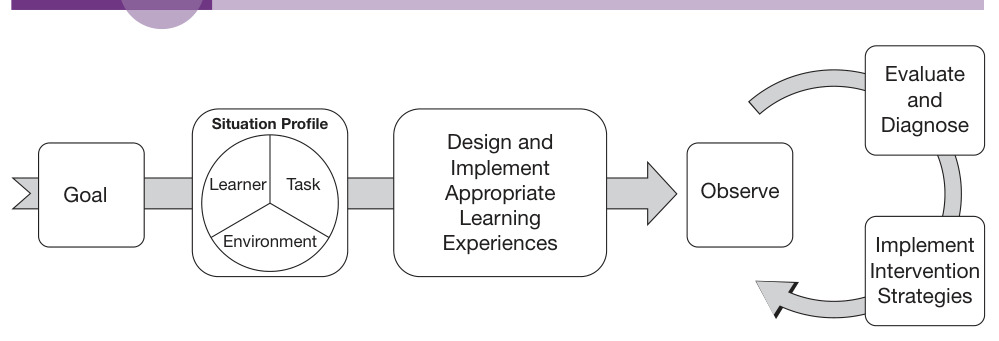
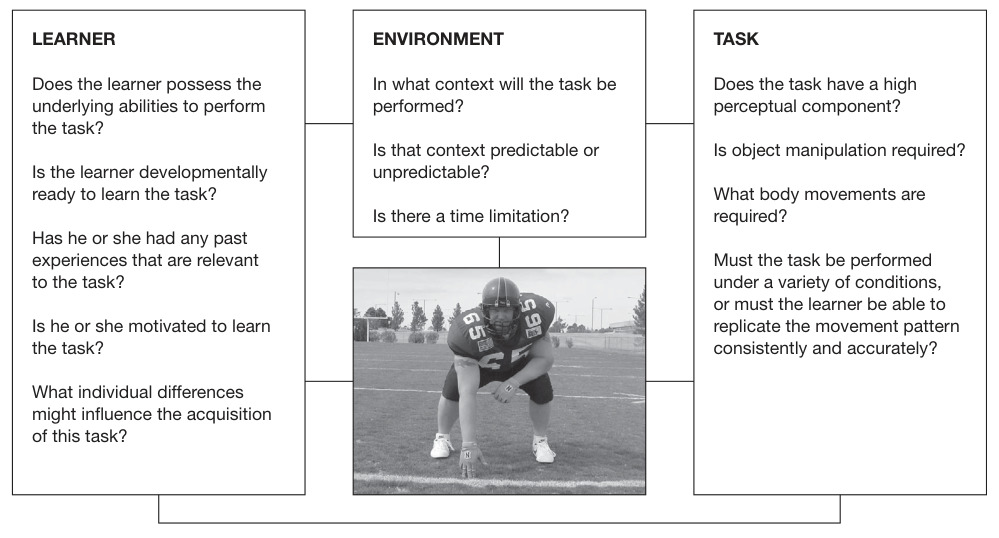
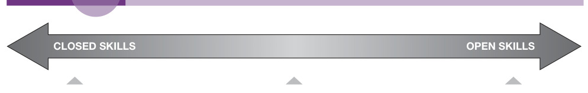
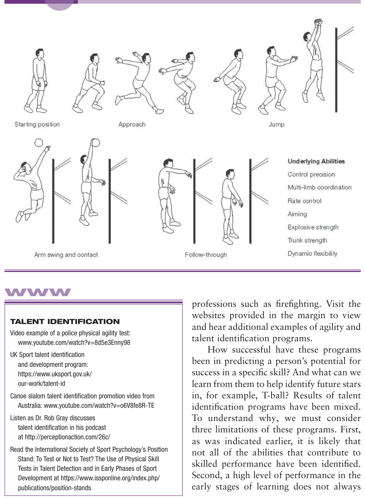

Chương 1 — Giới Thiệu Về Học Vận Động Và Kiểm Soát Vận Động
Tôi đã đi đến một kết luận đáng sợ. Tôi là yếu tố mang tính quyết định trong lớp học. Chính cách tiếp cận cá nhân của tôi tạo nên bầu không khí. Chính tâm trạng hằng ngày của tôi tạo nên thời tiết. Với tư cách là một giáo viên, tôi sở hữu sức mạnh to lớn khiến cuộc đời của một đứa trẻ trở nên khổ sở hoặc vui tươi. Tôi có thể là công cụ của sự tra tấn hoặc là phương tiện của sự truyền cảm hứng. Tôi có thể làm nhục hoặc làm vui, làm tổn thương hoặc chữa lành. Trong mọi tình huống, chính phản ứng của tôi quyết định liệu một cuộc khủng hoảng sẽ leo thang hay được hạ nhiệt, và một đứa trẻ được nhân hóa hay bị phi nhân hóa.
Haim Ginott, nhà giáo dục
Thông điệp của câu trích dẫn này rất rõ ràng: vai trò của người hướng dẫn—dù trong lớp học, sân chơi, phòng tập thể dục, phòng khám hay bối cảnh khác—là một vai trò rất quyền lực. Bầu không khí bạn tạo ra sẽ quyết định mức độ thành công mà học sinh, bệnh nhân, khách hàng hoặc vận động viên của bạn đạt được. Nền tảng của việc tạo ra một bầu không khí hiệu quả là sự hiểu biết về cách con người học. Motor Learning and Control for Practitioners (Học Vận Động Và Kiểm Soát Vận Động Dành Cho Huấn Luyện Viên) tập trung vào các quá trình chi phối việc tiếp thu và kiểm soát vận động, đồng thời cung cấp nền tảng để phát triển các chiến lược hướng dẫn hiệu quả nhằm thúc đẩy học tập và thực hiện.
THIẾT KẾ TRẢI NGHIỆM HỌC TẬP HIỆU QUẢ: MÔ HÌNH TÍCH HỢP
Thách thức liên tục mà người thực hành phải đối mặt là làm thế nào để hỗ trợ tốt nhất cho người học khi họ được giới thiệu, học lại, hoặc tinh chỉnh một kỹ năng vận động; cho dù đó là vượt qua thành công động tác chuyển từ ngồi sang đứng, chặn bóng đúng thời điểm và vị trí, hay cải thiện cơ chế tiếp đất để giảm nguy cơ chấn thương và tối ưu hóa thực hiện. Điều tối quan trọng trong thiết kế và triển khai các trải nghiệm học tập hiệu quả là tạo ra một kế hoạch hành động có cơ sở, dựa trên sự hiểu biết về quá trình học tập, tình huống học tập hiện tại, và các chiến lược hướng dẫn, luyện tập, can thiệp tiềm năng sẵn có để lựa chọn. Một mô hình tích hợp mô tả các thành phần của kế hoạch hành động này được minh họa trong Hình 1.1.

Hình 1.1: Mô hình tích hợp nhằm thúc đẩy học tập và thực hiện kỹ năng vận động.
Các thành phần trong hình: Quan sát; Đánh giá và Chẩn đoán; Triển khai Chiến lược Can thiệp; Thiết kế và Triển khai Trải nghiệm Học tập Phù hợp; Hồ sơ Tình huống; Người học; Nhiệm vụ; Môi trường; Mục tiêu.
Nửa đầu của mô hình rút từ cách tiếp cận học tập dựa trên tình huống của Schmidt và Wrisberg (2008) và bắt đầu bằng việc xác định kết quả dự kiến. Tiếp theo, phải lập một hồ sơ tình huống xem xét ba yếu tố: người học, nhiệm vụ, và môi trường hay bối cảnh mà nhiệm vụ được thực hiện—những yếu tố quyết định tương tác then chốt của vận động tại bất kỳ thời điểm nào (xem Hình 1.2). Sau khi hồ sơ tình huống học tập đã được lập, người thực hành có thể đưa ra quyết định sáng suốt về cách thiết kế và triển khai trải nghiệm học tập, bước tiếp theo trong quy trình. Nửa sau của mô hình kết hợp quan điểm toàn diện của Knudson (2013) về chẩn đoán vận động định tính (QMD). Tại thời điểm này, người thực hành bước vào một quy trình mang tính chu kỳ bắt đầu bằng việc quan sát các nỗ lực thực hiện của người học. Thông qua quan sát cả các khía cạnh cụ thể của việc thực hiện kỹ năng (đánh giá quá trình) lẫn kết quả của thực hiện (đánh giá sản phẩm), sự tiến bộ của người học hướng tới đạt được mục tiêu được đánh giá, và các lỗi then chốt được xác định cùng với mức độ ưu tiên. Sau đó, các chiến lược can thiệp nhằm tinh chỉnh kỹ năng được lựa chọn và triển khai, lại xem xét người học, nhiệm vụ và môi trường vì mỗi yếu tố và sự tương tác qua lại của nó với hai yếu tố kia luôn thay đổi. Thực hiện tiếp tục được quan sát và hiệu quả của can thiệp được đánh giá. Theo đó, các chiến lược can thiệp đã chọn được tiếp tục hoặc điều chỉnh khi người học nỗ lực đạt được kết quả dự kiến.

Hình 1.2: Sự tương tác của người học, nhiệm vụ và môi trường mà nhiệm vụ được thực hiện là nền tảng để hiểu và thúc đẩy tiếp thu kỹ năng vận động và thực hiện.
Người học: Người học có sở hữu các năng lực nền tảng để thực hiện nhiệm vụ không? Người học đã sẵn sàng về mặt phát triển để học nhiệm vụ này chưa? Anh ấy hoặc cô ấy đã có kinh nghiệm quá khứ nào liên quan đến nhiệm vụ không? Anh ấy hoặc cô ấy có động lực học nhiệm vụ này không? Những khác biệt cá nhân nào có thể ảnh hưởng đến việc tiếp thu nhiệm vụ này? Môi trường: Nhiệm vụ sẽ được thực hiện trong bối cảnh nào? Bối cảnh đó có thể đoán trước hay không thể đoán trước? Có giới hạn thời gian không? Nhiệm vụ: Nhiệm vụ có thành phần nhận thức cao không? Có yêu cầu thao tác với vật thể không? Cần những động tác cơ thể nào? Nhiệm vụ có phải được thực hiện trong nhiều điều kiện khác nhau, hay người học phải có khả năng tái tạo mô hình vận động một cách nhất quán và chính xác?
Khi bạn tiến triển qua các chương sắp tới, hãy ghi nhớ mô hình này. Chi tiết và các lưu ý cho từng bước sẽ được trình bày. Bạn có thể kết nối chúng với Mô hình Tích hợp không?
HỌC VẬN ĐỘNG, KIỂM SOÁT VÀ THỰC HIỆN
Như đã nêu trong phần trước, sự hiểu biết về quá trình học tập cung cấp cho người thực hành vận động con người kiến thức nền tảng làm cơ sở cho việc đánh giá thực hiện; cung cấp hướng dẫn hiệu quả; và thiết kế các trải nghiệm luyện tập, phục hồi chức năng và huấn luyện tối ưu. Vậy chính xác thì con người tiếp thu kỹ năng vận động như thế nào? Những quá trình nào cho phép hệ thống cơ–xương–khớp tạo ra các động tác dự kiến? Những biến số nào thúc đẩy hoặc cản trở việc tiếp thu kỹ năng? Những câu hỏi như vậy đã dẫn đến sự hình thành của một lĩnh vực nghiên cứu được gọi là học vận động. Học vận động là nghiên cứu về các quá trình liên quan đến việc tiếp thu và tinh chỉnh kỹ năng vận động cũng như các biến số thúc đẩy hoặc ức chế việc tiếp thu đó. Những câu hỏi khác mà các nhà nghiên cứu học vận động quan tâm bao gồm: Luyện tập nên được tổ chức như thế nào? Hướng dẫn nên tập trung sự chú ý của người học vào đâu khi luyện tập một kỹ năng mới? Loại phản hồi nào và lượng phản hồi bao nhiêu sẽ thúc đẩy tiếp thu kỹ năng? Một lĩnh vực liên quan, kiểm soát vận động, tập trung vào các khía cạnh thần kinh, thể chất và hành vi làm nền tảng cho vận động con người. Ví dụ về các câu hỏi mà một nhà nghiên cứu kiểm soát vận động có thể đặt ra là: Những yếu tố nào ảnh hưởng đến độ ổn định tư thế? Thông tin cảm giác đóng góp như thế nào vào việc tạo ra vận động và độ chính xác của các vận động đó? Các hành động cơ bắp được phối hợp như thế nào để tạo ra vận động thành thạo? Hiểu cả học vận động lẫn kiểm soát vận động là cần thiết để phát triển sự hiểu biết đầy đủ về tiếp thu kỹ năng vận động.
Học Là Gì?
Câu hỏi đầu tiên chúng ta nên đặt ra khi xem xét cách con người học là “Học là gì?” Trước khi tiếp tục, hãy hoàn thành Hoạt động Khám Phá 1.1.
Khi được dùng trong tham chiếu đến học vận động và kiểm soát vận động, học tập được định nghĩa là một thay đổi tương đối bền vững trong khả năng thực hiện một kỹ năng vận động của một người, như kết quả của luyện tập hoặc kinh nghiệm. Để biết liệu bạn đã học cách tung bóng hay chưa nhờ tham gia Hoạt động Khám Phá 1.1, bạn phải xác định xem đã có một thay đổi bền bỉ trong hành vi tung bóng của bạn hay chưa. Một phần của vấn đề chúng ta gặp phải khi cố xác định liệu một kỹ năng vận động đã được học hay không là chúng ta thực sự không thể nhìn thấy sự học tập, bởi các quá trình nền tảng hoặc bên trong dẫn đến một thay đổi tương đối bền vững không thể được quan sát trực tiếp. Tuy nhiên, điều chúng ta có thể thấy là thực hiện. Thực hiện là hành động thực thi một kỹ năng. Thông qua quan sát lặp đi lặp lại thực hiện của một cá nhân, chúng ta suy luận liệu cá nhân đó đã học một kỹ năng hay chưa. Những suy luận này dựa trên những thay đổi mà chúng ta quan sát được trong thực hiện của cá nhân theo thời gian, chẳng hạn như sự cải thiện về độ thành thạo và tính nhất quán của vận động. Cần thận trọng,
Hoạt Động Khám Phá 1.1
Thiết bị cần có:
- 2 quả bóng tennis
- Một chút không gian để di chuyển!
Mục tiêu: Mục tiêu của bài tập này là tung và bắt thành công hai quả bóng tennis bằng tay không thuận của bạn.
Quy trình: Để bắt đầu, đặt cả hai quả bóng tennis vào tay không thuận của bạn. Tung một quả bóng lên cao. Khi quả bóng đó đạt đến độ cao cực đại, tung quả thứ hai lên, để tay rảnh để bắt quả thứ nhất. Tiếp tục mô hình này, cố gắng đạt được số lần bắt liên tiếp nhiều nhất có thể. Lặp lại trong 10 phút, ghi lại số lần bắt thành công bạn đạt được trong mỗi lần thử (từ vị trí ban đầu đến lúc bạn làm rơi bóng hoặc bắt hụt).
Câu hỏi:
- Giả sử cuối cùng bạn cũng có thể bắt được hai lần trở lên, bạn có thể kết luận rằng mình đã học cách tung hai quả bóng bằng tay không thuận không? Tại sao có hoặc tại sao không?
- Giả sử rằng trong 9 phút đầu tiên tung bóng, bạn dành nhiều thời gian đuổi bóng hơn là bắt bóng. Cho đến mốc 9 phút, số lần bắt kỷ lục của bạn là hai. Đột nhiên, trong phút cuối, bạn bắt được sáu lần! Điều đó có nghĩa là bạn đã học cách tung bóng chưa?
- Dựa trên trải nghiệm tung bóng này, bạn có thể xây dựng một định nghĩa về học tập không?
- Những yếu tố người học, nhiệm vụ và môi trường nào đã ảnh hưởng đến thực hiện và học tập của bạn?
Học cách tung bóng.
tuy nhiên, để bảo đảm rằng các suy luận là chính xác. Nhiều biến số của người học, chẳng hạn như mệt mỏi hoặc lo âu, và các biến số của nhiệm vụ, chẳng hạn như sự cố với thiết bị, có thể làm suy giảm thực hiện nhưng không nhất thiết cho thấy mất khả năng. Hoặc, một người học có thể thực hiện một kỹ năng nhất định ở một mức độ thành thạo mới trong một buổi luyện tập, chỉ để trở lại mức độ ban đầu vào buổi luyện tập sau.
BẢN CHẤT CỦA KỸ NĂNG VẬN ĐỘNG
Khi chúng ta bắt đầu khám phá các yếu tố ảnh hưởng đến tiếp thu kỹ năng và thực hiện, chúng ta phải định nghĩa thuật ngữ kỹ năng. Định nghĩa đó phụ thuộc vào bối cảnh mà thuật ngữ này được sử dụng. Thuật ngữ kỹ năng có thể được dùng để mô tả chất lượng của một lần thực hiện. Gọi một người là thành thạo ngụ ý rằng người đó đã đạt được mức độ tinh luyện cao. Ví dụ, LeBron James được xem là một cầu thủ bóng rổ rất thành thạo.
Thuật ngữ kỹ năng vận động mô tả một hành động hoặc nhiệm vụ đáp ứng bốn tiêu chí:
- Nó hướng đến mục tiêu, nghĩa là được thực hiện nhằm đạt được một mục tiêu nào đó.
- Cần có động tác của cơ thể và/hoặc chi để hoàn thành mục tiêu.
- Những động tác đó là tự nguyện. Theo quy định này, các hành động phản xạ, chẳng hạn như phản xạ bước ở trẻ sơ sinh, không được xem là kỹ năng vì chúng xảy ra một cách không tự nguyện.
- Kỹ năng vận động được phát triển như kết quả của luyện tập. Nói cách khác, một kỹ năng phải được học hoặc học lại.
Đi lại bằng nạng được xem là một kỹ năng vận động, vì nó đáp ứng bốn tiêu chí này. Nó đòi hỏi động tác tự nguyện của cơ thể và/hoặc chi để đạt được một mục tiêu (ví dụ, di chuyển qua một căn phòng), và nó phải được học.
Người thực hành nên lưu ý sự khác biệt giữa một kỹ năng và một môn thể thao. Bóng chuyền là một môn thể thao. Nó bao gồm nhiều kỹ năng, trong đó có phát bóng, chuyền bóng bằng cẳng tay, chuyền bóng trên đầu và đập bóng, tất cả đều có đặc điểm khác nhau và đặt ra yêu cầu khác nhau cho người thực hiện.
Phân Loại Kỹ Năng
Bản chất của một kỹ năng đặt ra những yêu cầu cụ thể cho người học, mà người thực hành phải xem xét khi thiết kế trải nghiệm học tập. Để giúp người thực hành hiểu bản chất của kỹ năng vận động và những yêu cầu mà chúng đặt ra, một số hệ thống phân loại hay taxonomy đã được phát triển nhằm tổ chức các kỹ năng vận động theo các yếu tố chung của chúng. Việc biết mối liên hệ giữa các kỹ năng đa dạng có thể giúp người thực hành lập kế hoạch cho trải nghiệm học và luyện tập, cũng như cung cấp điểm khởi đầu cho đánh giá thực hiện.
Thử Thách Trí Não 1.1
Xác định xem những mục sau đây có thể được phân loại là kỹ năng vận động hay không. Giải thích từng lựa chọn phân loại.
- Đánh răng
- Gõ bút chì
- Giải một bài toán có lời văn
- Băng cổ tay
- Rút tay lại sau khi chạm vào bếp nóng
- May cúc áo
- Đi bộ
- Thổi kèn trumpet
- Phản xạ dù của trẻ sơ sinh
- Thực hiện các bài tập tạo thuận lợi thần kinh cơ bằng cảm giác tự thân (PNF).
Kỹ Năng Vận Động Tinh Vs. Thô
Hệ thống phân loại thường được sử dụng trong giáo dục thể chất thích ứng và phát triển vận động là hệ thống phân biệt giữa kỹ năng vận động tinh và kỹ năng vận động thô. Hệ thống này dựa trên độ chính xác của động tác và kích thước tương ứng của cơ bắp cần thiết để thực hiện thành công. Những kỹ năng liên quan đến động tác rất chính xác, được thực hiện bằng nhóm cơ nhỏ hơn, được gọi là kỹ năng vận động tinh. Những kỹ năng này có xu hướng mang tính thao tác; ví dụ bao gồm may cúc áo, buộc dây giày (câu cá), điều khiển dụng cụ nha khoa hoặc phẫu thuật, nhập thông tin liên lạc vào điện thoại thông minh, hoặc bóp cò súng của môn hai môn phối hợp. Cơ lớn hơn được dùng khi thực hiện các kỹ năng vận động thô, vốn ít nhấn mạnh vào độ chính xác và thường là kết quả của động tác đa chi. Những ví dụ về các kỹ năng này, thường được gọi trong giáo dục thể chất là các kỹ năng vận động cơ bản, bao gồm chạy, nhảy lò cò và nhảy chân chẵn. Vì nhiều kỹ năng đòi hỏi sự kết hợp của cả nhóm cơ lớn và nhỏ, một dải liên tục được sử dụng để phân loại. Những kỹ năng có nhiều yếu tố cơ lớn hơn được đặt gần đầu thô của dải liên tục hơn, và ngược lại. Ví dụ, trong môn bowling, cơ lớn của chân đẩy cơ thể về phía trước trong động tác tiếp cận, và cơ ở vai tạo ra cú vung tay cần thiết để phóng bóng, khiến những động tác này chủ yếu mang tính thô. Đồng thời, tuy nhiên, người chơi bowling cần mức độ kiểm soát vận động tinh cao để điều chỉnh độ xoáy của bóng lúc buông tay. Trên thực tế, kiểm soát vận động tinh có

Hình 1.4: Các động tác chính xác cần thiết để may vá khiến đây trở thành một kỹ năng vận động tinh.
Hình 1.3: Nhảy qua một vũng nước đòi hỏi nhóm cơ lớn hơn và ít độ chính xác hơn, khiến đây trở thành một kỹ năng vận động thô.
Thử Thách Trí Não 1.2
Xác định xem mỗi kỹ năng sau đây được phân loại là kỹ năng vận động tinh (F) hay thô (G), hay có yếu tố của cả hai (B).
- Ký tên vào tấm séc
- Rê bóng rổ
- Ném đĩa
- Đi lại bằng nạng
- Tắc bóng (trong bóng đá)
- Rạch một vết mổ phẫu thuật
- Nhặt một cái kẹp giấy
- Chuyền bóng trên đầu (bóng chuyền)
tác động đáng kể đến mức độ mà nhiều kỹ năng có thể được thực hiện thành thạo (Payne & Isaacs, 2020). Theo đó, mức độ kiểm soát vận động tinh thể hiện trong khi thực hiện một kỹ năng có thể được dùng để đánh giá sự phát triển kỹ năng.
Trẻ em có xu hướng đạt được độ thành thạo kỹ năng vận động thô trước khi phát triển khả năng kiểm soát kỹ năng vận động tinh (Eichstaedt & Kalakian, 1993). Do đó, sự sẵn sàng phát triển phải là một yếu tố được xem xét khi thiết kế các tiến trình giảng dạy trong đó nhiệm vụ học tập ngày càng khó hơn. Các kỹ năng hoặc thành phần kỹ năng nên được giới thiệu theo trình tự đi từ thô đến tinh.
Kỹ Năng Rời Rạc Vs. Nối Tiếp Vs. Liên Tục
Hệ thống phân loại thứ hai xếp các kỹ năng vào một trong ba hạng mục dựa trên bản chất tổ chức của chúng. Kỹ năng rời rạc là kỹ năng có điểm bắt đầu và điểm kết thúc được xác định rõ. Ví dụ như vung gậy golf, chuyển từ ngồi sang đứng, và ném móng ngựa. Khi một số kỹ năng rời rạc được kết hợp thành một trình tự tích hợp, chẳng hạn như quàng dây bắt bê, thực hiện một bài biểu diễn trượt băng nghệ thuật, hoặc dọn ngăn kéo dao thìa từ máy rửa bát, nó được phân loại là kỹ năng nối tiếp. Cuối cùng, kỹ năng liên tục là những kỹ năng mà điểm bắt đầu và điểm kết thúc hoặc là tùy ý, hoặc được xác định bởi một yếu tố môi trường nào đó (chẳng hạn như vạch đích) thay vì bởi chính nhiệm vụ. Thường thì các kỹ năng liên tục mang tính lặp đi lặp lại. Chúng bao gồm đạp xe, tập trên máy elliptical, chèo thuyền, đẩy xe lăn bằng tay, và vẽ theo đường mẫu.
Bản chất tổ chức của một nhiệm vụ có hàm ý đối với luyện tập. Vì các động tác trong kỹ năng liên tục có sự phụ thuộc lẫn nhau cao, chúng thường được luyện tập tốt nhất như một toàn thể. Tuy nhiên, kỹ năng nối tiếp thường có thể được đơn giản hóa khi cần thiết bằng cách luyện tập các thành phần riêng lẻ. Mối quan hệ giữa tổ chức nhiệm vụ và luyện tập toàn bộ so với luyện tập từng phần sẽ được thảo luận chi tiết trong Chương 9.
Thử Thách Trí Não 1.3
Phân loại mỗi kỹ năng sau đây là rời rạc (D), liên tục (C), hay nối tiếp (S).
- Nhảy ba bước
- Cú đánh croquet
- Đá bóng bằng chân (punt bóng bầu dục)
- Động tác lunge
- Nhảy xà ngang thể dục dụng cụ
- Chuyển từ xe lăn sang giường
- Đi bộ với dụng cụ hỗ trợ
- Trượt tuyết băng đồng
Kỹ Năng Đóng Vs. Kỹ Năng Mở
Tính đoán trước được của môi trường mà một kỹ năng được thực hiện quyết định hệ thống phân loại thứ ba. Hệ thống này cũng dựa trên một dải liên tục, vì mức độ đoán trước được có thể thay đổi giữa thấp và cao. Ở một đầu của dải liên tục là các kỹ năng được thực hiện trong môi trường ổn định, có thể đoán trước; đây là các kỹ năng đóng. Với kỹ năng đóng, người thực hiện kiểm soát tình huống thực hiện vì vật thể bị tác động hoặc bối cảnh mà kỹ năng được thực hiện không thay đổi. Ví dụ, trong môn bowling, bất kể đường bowling có đông đúc đến đâu, các cọc bóng vẫn đứng yên và người thực hiện chọn thời điểm bắt đầu động tác. Những ví dụ khác về kỹ năng đóng bao gồm chẻ gỗ, cú ném phạt, nhặt một tách cà phê, kéo khóa áo khoác, và băng cổ tay cho vận động viên.
Các kỹ năng mở nằm ở đầu kia của dải liên tục, vì chúng được thực hiện trong một môi trường không đoán trước được, luôn thay đổi. Trong kỹ năng mở, người thực hiện sẽ không biết cần loại động tác nào cho đến ngay trước khi thực hiện (Smith, 2011). Bắt bóng lăn là một ví dụ điển hình. Sau khi bóng được đánh đi, một cầu thủ ở hàng trong nhận được thông tin về hướng và quỹ đạo nhưng không biết chính xác vị trí bóng sẽ nảy lên. Thêm vào đó, khi bóng chạm đất hoặc bất kỳ lúc nào khi bóng di chuyển qua sân trong, bóng có thể cong hoặc nảy sai, buộc cầu thủ phải sẵn sàng điều chỉnh đến phút cuối. Tương tự, trong môn xe đạp leo núi, người đi xe phải liên tục điều chỉnh phản ứng của mình để phù hợp với đường mòn. Những ví dụ khác về kỹ năng mở bao gồm đuổi đối thủ trong môn khúc côn cầu trên sân và đi bộ qua đám đông sau một buổi hòa nhạc, phim chiếu rạp, hoặc sự kiện thể thao. Hình 1.5 cho thấy dải liên tục và các câu hỏi dẫn dắt để giúp người thực hành xác định một kỹ năng nằm ở vị trí nào trên dải liên tục đó.
Sự phân biệt đóng/mở là quan trọng đối với người thực hành, vì mục tiêu hướng dẫn cho mỗi loại khác biệt đáng kể. Đối với kỹ năng đóng, tính nhất quán là mục tiêu và nên nhấn mạnh việc tinh chỉnh kỹ thuật. Tuy nhiên, vì chúng được thực hiện trong nhiều bối cảnh khác nhau, một số kỹ năng đóng được gọi là kỹ năng đóng có tính biến thiên giữa các lần thử. Đối với những loại kỹ năng này, trong khi

Hình 1.5: Dải liên tục kỹ năng đóng–mở.
Kỹ năng đóng: Với tới cây bút; Đẩy xà (bench press); Phát bóng tennis; Đánh bóng từ máy phát bóng; Hỗ trợ (spot) vận động viên thể dục dụng cụ; Chặn cú bóng trong môn goalball. • Loại động tác cần thiết đã được biết trước • Người thực hiện quyết định thời điểm bắt đầu động tác • Kỹ năng chỉ phụ thuộc vào hình thức vận động
Kỹ năng mở: • Loại động tác không biết cho đến ngay trước khi cần • Không kiểm soát được thời điểm bắt đầu động tác • Phải phối hợp động tác với động tác của đồng đội, đối thủ, hoặc các biến số khác
việc phát triển kỹ thuật vẫn quan trọng, người học cũng phải có khả năng điều chỉnh kỹ thuật đó theo tình huống. Ví dụ, người chơi bowling phải điều chỉnh thực hiện của mình dựa trên vị trí của các cọc bóng trong bất kỳ lần thử nào, vì vậy họ nên luyện tập các kết hợp cọc bóng tiềm năng khác nhau. Tương tự, luyện tập cú putt trong golf nên bao gồm nhiều độ dốc và điều kiện mặt cỏ khác nhau, cũng như các vị trí và khoảng cách khác nhau từ bóng đến lỗ.
Đối với kỹ năng mở, nơi người học phải liên tục điều chỉnh động tác của mình theo môi trường không ổn định và không đoán trước được, thực hiện thành công phụ thuộc ít hơn vào việc làm chủ kỹ thuật và nhiều hơn vào khả năng chọn đáp án phù hợp của người học trong một tình huống nhất định. Do đó, luyện tập nên mô phỏng trò chơi hoặc bối cảnh mà kỹ năng sẽ được thực hiện, nhấn mạnh vào việc học cách dự đoán và thích ứng với các yêu cầu của tình huống thực hiện luôn thay đổi.
Sự phân biệt đóng/mở cũng có thể giúp người thực hành điều chỉnh độ phức tạp của nhiệm vụ. Ví dụ, ném một quả bóng bầu dục có thể được xem là kỹ năng đóng hoặc mở, tùy thuộc vào bối cảnh. Ném vào một mục tiêu cố định được xem là kỹ năng đóng. Khi các biến số khác được thêm vào, chẳng hạn như một người nhận bóng di chuyển hoặc một hàng thủ đuổi theo, việc ném bóng bầu dục trở thành một nhiệm vụ ngày càng mở và phức tạp hơn. Trong các giai đoạn đầu của tiếp thu kỹ năng, người học khó có thể tập trung vào việc thực hiện động tác trong khi đồng thời nhận biết các khía cạnh của môi trường (chẳng hạn như vị trí của người nhận bóng hoặc động tác của cầu thủ phòng thủ)—những đặc tính vốn có của kỹ năng mở. Bằng cách thay đổi bối cảnh của một kỹ năng để ban đầu làm cho nó đóng hơn, người thực hành có thể giảm một cách chiến lược các yêu cầu chú ý và đơn giản hóa quá trình học tập.
Hệ Thống Phân Loại Đa Chiều
Theo Gentile (2000), người ta không thể hiểu đầy đủ các yêu cầu mà một nhiệm vụ đặt ra cho người thực hiện bằng cách sử dụng một hệ thống đơn chiều. Thay vào đó,
Gentile đề xuất một hệ thống phân loại phân loại kỹ năng theo hai đặc điểm chung: (1) bối cảnh mà chúng được thực hiện (điều kiện điều tiết) và (2) yêu cầu hành động của kỹ năng. Kết hợp lại, hai chiều này cung cấp cái nhìn sâu sắc về các quá trình liên quan đến tiếp thu kỹ năng.
Thử Thách Trí Não 1.4
- Xác định vị trí trên dải liên tục đóng–mở của các kỹ năng sau bằng cách đặt các chữ cái tương ứng trên đường thẳng. ĐÓNG — MỞ a. Đi bộ với gậy qua một trung tâm mua sắm đông đúc b. Đua xe BMX c. Chơi trò chơi điện tử d. Hướng dẫn bệnh nhân thực hiện các bài giãn cơ tạo thuận lợi thần kinh cơ bằng cảm giác tự thân (PNF) e. Đánh bóng từ giá đỡ (tee) f. Đánh bóng được ném tới g. Cắt cỏ h. Trượt tuyết trên ván i. Giữ thăng bằng trên ván lắc j. Bài tập né tránh bằng dây xem tại www.youtube.com/watch?v=-ohk6XGaQQ&list=TLPQMTEwNTIwMjCdlZ2wvjP4ag&index=5
- José đã lái xe từ năm 16 tuổi. Giờ, ở đại học, anh ấy muốn mua một chiếc xe nhất định, nhưng nó có hộp số tay. Anh ấy chưa từng lái xe số tay trước đây và đã hỏi bạn có dạy anh ấy không. Bạn đồng ý. Xếp hạng các môi trường sau cho buổi học đầu tiên của José, với 1 là tốt nhất và 3 là tệ nhất. Giải thích thứ hạng của bạn. a. Trên một con đường nông thôn b. Trong một bãi đậu xe trống c. Trong giao thông thành phố
Điều Kiện Điều Tiết
Kỹ năng không được thực hiện trong chân không. Để thực hiện một cú đánh đầu nhảy lên trong bóng đá, ví dụ, người thực hiện phải điều chỉnh động tác của mình theo chiều cao, kích thước, tốc độ và quỹ đạo của bóng, cũng như vị trí của mục tiêu dự kiến. Do đó, đối với bất kỳ kỹ năng nhất định nào, tồn tại một số yếu tố môi trường quy định các đặc điểm vận động cần thiết để thực hiện thành công. Những yếu tố này được gọi là điều kiện điều tiết (Gentile, 2000) và việc xác định chúng có thể được dùng để phân biệt các kỹ năng. Những yếu tố khác, như sự phân tâm, được xem là không điều tiết. Dù chúng có thể hiện diện trong bối cảnh môi trường và thậm chí ảnh hưởng đến thực hiện, động tác không nhất thiết phải phù hợp với chúng để đạt được mục tiêu hành động.
Thử Thách Trí Não 1.5
- Xác định xem mỗi mục dưới đây được xem là điều kiện điều tiết (R) hay không điều tiết (N) đối với việc ném phi tiêu: a. Chiều cao của bảng phi tiêu b. Tiếng ồn của đám đông c. Khoảng cách tới bảng phi tiêu d. Độ sắc của đầu phi tiêu e. Điểm số
- Trên một tờ giấy riêng, xác định các điều kiện điều tiết cho từng mục sau: a. Thực hiện động tác leo núi trên bóng Bosu b. Đi bộ dọc theo một đường mòn trong rừng c. Nhảy từ bàn nhảy d. Trượt tuyết băng đồng e. Bước lên thang cuốn f. Nhặt tiền thối từ quầy thu ngân g. Lau bụi đồ nội thất trong nhà bạn h. Lấy valise của bạn từ băng chuyền hành lý
- Một nhà trị liệu nghề nghiệp hướng dẫn một đứa trẻ xâu mì ống vào dây để cải thiện kiểm soát vận động tinh. Hãy xác định xem hoạt động này có tính biến thiên giữa các lần thử hay không. Biện minh cho câu trả lời của bạn.
Khi xem xét bối cảnh môi trường mà một nhiệm vụ được thực hiện, trước tiên người ta phải xác định xem các điều kiện điều tiết là cố định, như khi bắn vào một mục tiêu cố định, hay đang chuyển động, như trong bắn đĩa bay. Lưu ý rằng khái niệm này song song với khái niệm phân loại kỹ năng mở so với đóng, ở chỗ các điều kiện điều tiết của kỹ năng đóng có xu hướng cố định, trong khi đó, các điều kiện điều tiết của kỹ năng mở có xu hướng chuyển động. Như đã nêu trước đó, khi người học phải phù hợp với các ràng buộc do môi trường áp đặt, họ phải tham gia vào các quá trình phức tạp hơn để đánh giá tình huống và chọn đáp án phù hợp.
Câu hỏi tiếp theo là liệu có tính biến thiên đáp án giữa các lần thử hay không—nghĩa là, các điều kiện điều tiết có giữ nguyên hay có thay đổi sau mỗi lần thực hiện? Một cú ném phạt, ví dụ, có tính biến thiên giữa các lần thử thấp, bởi vì bối cảnh mà nó được thực hiện không thay đổi từ cú này sang cú khác. Rổ bóng không thay đổi, khoảng cách mà người ta thực hiện cú ném không đổi, và các cầu thủ phòng thủ không cản trở người ném. Ở chiều ngược lại, các hậu vệ biên (tail back) trải nghiệm mức độ biến thiên giữa các lần thử rất lớn; họ phải thay đổi kiểu chạy của mình mỗi khi nhận bóng để tránh bị tắc bóng và giành được số yard tối đa.
Yêu Cầu Hành Động
Chiều còn lại mà Gentile (2000) đề xuất liên quan đến yêu cầu hành động của một kỹ năng, cụ thể là về vận động cơ thể và thao tác với vật thể. Trong ngữ cảnh này, vận động cơ thể đề cập đến việc người thực hiện có phải thay đổi vị trí (di chuyển cơ thể từ điểm A đến điểm B) khi thực hiện kỹ năng hay không. Trượt tuyết băng đồng, thực hiện cú nhảy cao, và sử dụng thiết bị hỗ trợ đi bộ là những ví dụ về kỹ năng đòi hỏi người thực hiện thay đổi vị trí từ nơi này sang nơi khác (vận chuyển cơ thể). Ở đầu kia của dải là những kỹ năng đòi hỏi sự ổn định của cơ thể. Thực hiện động tác hít đất, nhấc một tách cà phê khi đang ngồi, thực hiện cú putt trong golf, và chơi bộ trống đều thuộc hạng mục này. Lưu ý rằng dù cơ thể thay đổi vị trí khi, ví dụ, một người đang điều khiển xe mô tô, hành động này vẫn được xếp vào loại ổn định cơ thể. Trong trường hợp này, cá nhân đó thực sự không di chuyển cơ thể mà cơ thể di chuyển cùng với chiếc xe mô tô. Những ví dụ khác là được kéo lên đỉnh đồi trượt tuyết bằng dây kéo, câu cá bằng lưới kéo, và đi tham quan thành phố bằng Segway.
Một yếu tố quyết định thứ hai của yêu cầu hành động là thao tác với vật thể. Một số kỹ năng đòi hỏi người thực hiện thao tác với vật thể hoặc đối thủ. Đan len, rửa bát, nhảy sào và đấu vật thuộc hạng mục này. Những kỹ năng khác, chẳng hạn như thực hiện bài tập nghiêng khung chậu, bài kiểm tra nhanh nhẹn hình lục giác, và kiểu bước nhịp nhàng của điệu tango, không yêu cầu thao tác với vật thể.
Áp Dụng Hệ Thống Phân Loại Đa Chiều
Để sử dụng hệ thống phân loại này nhằm hiểu các yêu cầu mà một nhiệm vụ đặt ra cho người học, người thực hành phải đặt bốn câu hỏi:
- Các điều kiện điều tiết là cố định hay đang chuyển động?
- Các điều kiện điều tiết có giữ nguyên (không có tính biến thiên giữa các lần thử) hay có thay đổi (có tính biến thiên giữa các lần thử) sau mỗi lần thực hiện?
- Người thực hiện có được yêu cầu thay đổi vị trí hay duy trì tư thế cơ thể khi thực hiện nhiệm vụ không?
- Nhiệm vụ có yêu cầu người thực hiện thao tác với một vật thể hoặc đối thủ không?
Sau khi xác định được câu trả lời cho từng câu hỏi, kỹ năng có thể được phân loại vào một trong 16 hạng mục kết quả, như thể hiện trong Bảng 1.1.
Ví dụ, trong cú chuyền bóng bằng cẳng tay trong bóng chuyền, người thực hiện trước tiên phải theo dõi một quả bóng đang chuyển động, di chuyển đến vị trí để chặn bóng, sau đó kiểm soát độ bật của bóng để đẩy nó theo hướng mong muốn. Do đó, các điều kiện điều tiết
Bảng 1.1: Hệ thống phân loại đa chiều của Gentile, kèm ví dụ về nhiệm vụ.
YÊU CẦU HÀNH ĐỘNG — Không vận chuyển cơ thể cũng không thao tác vật thể / Chỉ thao tác vật thể / Chỉ vận chuyển cơ thể / Vừa vận chuyển cơ thể vừa thao tác vật thể.
Điều kiện điều tiết — Cố định và không đổi: (1) Thực hiện động tác gập bụng; (2) Di chuyển một quân cờ; (3) Leo một cái thang; (4) Đẩy tạ.
Điều kiện điều tiết — Cố định và biến đổi: (5) Viết các chữ ABC bằng chân để phục hồi chức năng mắt cá; (6) Chơi “round the clock” trong môn phi tiêu; (7) Đi theo một kiểu múa đã được vẽ trên sàn; (8) Cùng với một người bạn, đi theo một kiểu múa đã được vẽ trên sàn.
Điều kiện điều tiết — Đang chuyển động và không đổi: (9) Nổi trên sông bằng một vòng phao; (10) Nhân viên kiểm tra chất lượng lấy một chai từ băng chuyền đang chạy trong nhà máy đóng chai; (11) Chạy xuống một ngọn đồi; (12) Bước lên một vỉa hè di động khi đang dùng nạng.
Điều kiện điều tiết — Đang chuyển động và biến đổi: (13) Đi trên một vòng phao được kéo bởi ca nô tốc độ; (14) Bắt nhiều quả bóng với kích thước khác nhau trong khi đứng thăng bằng bằng một chân; (15) Trượt băng trên một sân băng đông đúc; (16) Cú chuyền bóng bằng cẳng tay trong bóng chuyền.
đang chuyển động (kỹ năng mở) và thay đổi từ lần thử này sang lần thử khác, và người thực hiện phải thay đổi vị trí và thao tác với vật thể. Với đánh giá này, cú chuyền cẳng tay thuộc hạng mục 16.
Người thực hành vận động con người có thể sử dụng hệ thống phân loại đa chiều của Gentile theo một số cách. Thứ nhất, khi bạn đi chéo từ ô trên bên trái đến ô dưới bên phải, độ phức tạp của nhiệm vụ tăng lên, kèm theo sự gia tăng tương ứng về yêu cầu đặt lên người thực hiện. Theo đó, kỹ năng đơn giản nhất là kỹ năng mà môi trường cố định, không có tính biến thiên giữa các lần thử hay vận chuyển cơ thể, và không yêu cầu thao tác với vật thể. Ở đầu kia của dải, kỹ năng phức tạp nhất là kỹ năng được thực hiện trong bối cảnh môi trường đang chuyển động, có tính biến thiên giữa các lần thử cao, và đòi hỏi cả vận chuyển cơ thể lẫn thao tác với vật thể. Để thực hiện thành công một kỹ năng như vậy, người thực hiện phải có khả năng quét môi trường để xác định và xử lý thông tin liên quan, quyết định cách đáp án, và phân bổ nguồn lực chú ý để kiểm soát đồng thời vận chuyển cơ thể và thao tác với vật thể.
Thứ hai, bằng cách hiểu mức độ phức tạp của một kỹ năng, người thực hành có thể thiết kế tốt hơn những trải nghiệm học tập vừa thử thách vừa thực tế. Một tiến trình logic mà đi từ đơn giản đến phức tạp cuối cùng dẫn đến mô phỏng bối cảnh thực tế mà kỹ năng sẽ được thực hiện. Hãy xem Hình 1.6 để có ví dụ về tiến trình từ đơn giản đến phức tạp đối với cú chuyền bóng bằng cẳng tay trong bóng chuyền.
Thử Thách Trí Não 1.6
ĐÁNH GIÁ ĐIỀU KIỆN ĐIỀU TIẾT
Sử dụng bảng dưới đây, hãy đánh giá các điều kiện điều tiết và yêu cầu hành động của mỗi kỹ năng. Dựa trên đánh giá của bạn, hãy xác định kỹ năng đó thuộc hạng mục nào trong số 16 hạng mục của hệ thống phân loại đa chiều của Gentile (Bảng 1.1).
Bảng đánh giá: Kỹ năng | Điều kiện điều tiết (môi trường): cố định / đang chuyển động | Điều kiện điều tiết (biến thiên giữa các lần thử): không đổi / thay đổi | Vận chuyển cơ thể (thay đổi vị trí): có / không | Thao tác vật thể: có / không | Số hạng mục.
Ví dụ đã điền sẵn: Đặt một quả bóng golf — X, X, X, X — 6.
- Đẩy xe lăn qua đám đông tại một buổi hòa nhạc
- Thực hiện động tác lunge trên bóng Bosu
- Nhắn tin trên điện thoại di động
- Trượt tuyết tốc độ ngắn (short track)
- Trò chơi Wii Fit xem tại www.youtube.com/watch?v=fmHRVjAlt_c
Thiết kế các tiến trình trở nên thách thức hơn, tuy nhiên, khi nhiều kỹ năng hoặc nhiều biến thể của một kỹ năng cùng chia sẻ một hạng mục trong hệ thống phân loại. Ví dụ, cú chuyền bóng bằng cẳng tay có thể được dùng để trả bóng qua lưới, nhận một cú
Hình 1.6: Tiến trình mẫu từ đơn giản đến phức tạp cho cú chuyền bóng bằng cẳng tay.
Kỹ năng: Chuyền bóng bằng cẳng tay trong bóng chuyền. Các biến số có thể thay đổi: 1. Độ ổn định của điều kiện điều tiết; 2. Tính biến thiên giữa các lần thử; 3. Vận chuyển cơ thể.
Hoạt động 1: Bạn tình tung bóng với quỹ đạo và vị trí không đổi. Hệ thống phân loại của Gentile: 1. Điều kiện điều tiết tương đối ổn định; 2. Không có tính biến thiên giữa các lần thử; 3. Không vận chuyển cơ thể; 4. Thao tác vật thể.
Hoạt động 2: Bạn tình tung bóng vào một vị trí không đổi nhưng thay đổi quỹ đạo mỗi lần. Hệ thống phân loại của Gentile: 1. Điều kiện điều tiết đang chuyển động; 2. Có tính biến thiên giữa các lần thử; 3. Không vận chuyển cơ thể; 4. Thao tác vật thể.
Hoạt động 3: Bạn tình tung bóng đến các vị trí khác nhau với quỹ đạo khác nhau nhưng báo trước bóng sẽ đi về đâu trước khi tung. Hệ thống phân loại của Gentile: 1. Điều kiện điều tiết tương đối ổn định; 2. Có tính biến thiên giữa các lần thử; 3. Có vận chuyển cơ thể; 4. Thao tác vật thể.
Hoạt động 4: Bạn tình tung ngẫu nhiên bóng đến các vị trí khác nhau với quỹ đạo khác nhau mà không báo trước bóng sẽ đi về đâu. Hệ thống phân loại của Gentile: 1. Điều kiện điều tiết đang chuyển động; 2. Có tính biến thiên giữa các lần thử; 3. Có vận chuyển cơ thể; 4. Thao tác vật thể.
phát bóng hoặc cú đánh tấn công của đối thủ, hoặc để đưa bóng lên không trung cho một cú tấn công. Dù tất cả các biến thể này đều thuộc Hạng mục 16, độ chính xác trong việc đặt bóng lại khác nhau ở mỗi biến thể, làm thay đổi độ phức tạp của nhiệm vụ. Tương tự, đứng thăng bằng bằng một chân với mắt mở hoặc mắt nhắm đều thuộc Hạng mục 1, nhưng tư thế sau khó thực hiện hơn do thiếu các tín hiệu thị giác. Thực hiện cùng một nhiệm vụ với hai tay giơ cao qua đầu thay vì dang sang ngang cũng làm thay đổi độ phức tạp của kỹ năng do sự dịch chuyển của vị trí trọng tâm, nhưng kỹ năng vẫn nằm trong Hạng mục 1. Trong những trường hợp như vậy, người thực hành phải xem xét những thuộc tính nhiệm vụ khác ảnh hưởng đến yêu cầu mà kỹ năng đặt lên người thực hiện khi sắp xếp thứ tự các hoạt động luyện tập.
Cuối cùng, người thực hành cũng có thể dùng mô hình của Gentile để đánh giá một cách có hệ thống các khả năng và hạn chế vận động của người học. Việc đánh giá này mang lại sự hiểu biết tốt hơn về mức độ phức tạp mà người học có thể xử lý và cái nhìn sâu sắc về những yêu cầu thực hiện (ví dụ, quét môi trường, xử lý thông tin, phân bổ chú ý) nào đang gây khó khăn. Ví dụ, nếu người học không còn có thể hoàn thành thành công cú chuyền cẳng tay khi được yêu cầu thay đổi vị trí để chặn bóng (Hoạt động số 3 trong Hình 1.6;
phân loại Hạng mục 8), thì yêu cầu xử lý kết hợp của vận chuyển cơ thể và thao tác với vật thể có thể là quá cao. Một giải pháp tiềm năng là cho người học luyện tập việc thay đổi vị trí và định vị bản thân để chuyền cẳng tay mà không có bóng. Động tác có thể ban đầu tự định nhịp và đi cùng một hướng ở mỗi lần thử (Hạng mục 3), tiến triển đến việc nhanh chóng thay đổi vị trí về phía trước, phía sau và sang hai bên khi thông tin hướng đi được cung cấp trước (Hạng mục 7), và cuối cùng là phải di chuyển vào vị trí mà không được báo trước hướng đi (Hạng mục 15). Khi người học đã thoải mái với động tác chân, Hoạt động số 3 trong Hình 1.6 sẽ được đưa trở lại, tiến triển cuối cùng đến Hoạt động số 4, nơi hướng và quỹ đạo của cú tung không còn đoán trước được, mô phỏng điều kiện thi đấu.
Thử Thách Trí Não 1.7
Hãy thiết kế một tiến trình từ đơn giản đến phức tạp có thể được dùng để dạy kỹ năng rê bóng (bóng rổ) bằng cách sử dụng hệ thống phân loại của Gentile.
KHÁC BIỆT CÁ NHÂN
Một thách thức mà người thực hành phải đối mặt là thực tế là tất cả người học đều độc nhất. Tính độc nhất của mỗi người là hàm số của các đặc điểm tương đối ổn định và bền bỉ được gọi là khác biệt cá nhân. Các yếu tố như chiều cao, dáng người, thiếu ngủ, cấu trúc sinh lý (ví dụ, số sợi cơ co nhanh so với co chậm), phong cách học, loại và lượng kinh nghiệm vận động trước đó, động lực, mức độ phát triển, nền tảng văn hóa, cấu trúc tâm lý, thái độ và sự tự tin đều ảnh hưởng đến tốc độ và tiềm năng phát triển độ thành thạo kỹ năng. Do khác biệt cá nhân, các chiến lược giảng dạy sẽ không hiệu quả như nhau đối với tất cả người học, vì vậy người thực hành phải xác định chiến lược tốt nhất để áp dụng dựa trên nhu cầu và phẩm chất đa dạng của người học.
Năng Lực Vận Động
Người thực hành vận động con người quan tâm đến những khác biệt cá nhân về năng lực vận động. Năng lực là những đặc điểm di truyền là điều kiện tiên quyết cho thực hiện thành thạo. Theo đó, mức độ mà người học có thể phát triển độ thành thạo trong một kỹ năng vận động cụ thể phụ thuộc vào việc họ có sở hữu các năng lực nền tảng cần thiết hay không.
Mặc dù nhiều năng lực khác nhau đã được xác định cho đến nay, các nhà nghiên cứu ban đầu giả thuyết rằng tồn tại một năng lực vận động chung duy nhất (Brace, 1927; McCloy, 1934). Đứng sau quan niệm này là nhận xét rằng các vận động viên thành đạt thường tiếp nhận kỹ năng mới nhanh chóng và vượt trội ở nhiều kỹ năng khác mà không cần nhiều luyện tập. Do đó, có vẻ hợp lý khi cho rằng tồn tại mối tương quan cao giữa mức độ năng lực chung của một người và tiềm năng đạt độ thành thạo kỹ năng ở nhiều nhiệm vụ khác nhau. Nói cách khác, nếu bạn thừa hưởng mức độ năng lực vận động chung cao, bạn có thể đạt được mức độ thành thạo cao trong tất cả các kỹ năng vận động, từ golf đến đua xe trượt băng (bobsledding) đến chèo kayak.
Thách thức sự tồn tại của năng lực vận động chung, giả thuyết tính đặc thù đề xuất rằng, mặc dù cá nhân có thể thừa hưởng một số lượng lớn năng lực vận động, những năng lực đó độc lập với nhau (Henry, 1968). Thêm vào đó, mỗi kỹ năng đòi hỏi một tập hợp năng lực cụ thể để thực hiện thành công. Hệ quả là, một người đạt được mức độ thành thạo cao trong bắn cung sẽ không nhất thiết đạt được mức độ thành thạo tương tự trong đấu vật, vì hai kỹ năng này có yêu cầu năng lực nền tảng khác nhau.
Nghiên cứu kiểm tra sức mạnh của mối liên hệ giữa các năng lực vận động đã chấm dứt cuộc tranh luận giữa những người ủng hộ năng lực vận động chung và giả thuyết tính đặc thù. Nhìn chung, các nhà nghiên cứu đã phát hiện mối tương quan thấp giữa thực hiện của một cá nhân ở hai nhiệm vụ khác nhau (kể cả những nhiệm vụ có vẻ liên quan chặt chẽ), ủng hộ giả thuyết tính đặc thù (ví dụ, Drowatzky & Zucatto, 1967; Henry, 1968; Zelaznik, Spencer, & Doffin, 2000).
GHI CHÚ NGHIÊN CỨU
Tầm quan trọng của phối hợp mắt–tay đối với nhiều môn thể thao và hoạt động không thể bị phóng đại. Kết quả là, một số công ty đã tạo ra các thiết bị huấn luyện để tăng cường phối hợp mắt–tay, mà họ tuyên bố có thể nâng cao thực hiện trên nhiều loại nhiệm vụ. Ẩn dưới những tuyên bố này là giả định rằng phối hợp mắt–tay là một năng lực chung. Với việc thiếu bằng chứng ủng hộ sự tồn tại của các năng lực chung, và sự phổ biến hiện nay của những thiết bị này trong đánh giá và huấn luyện phối hợp mắt–tay chung, Ellison và các cộng sự (2018) đã điều tra mối quan hệ giữa thực hiện trên các bài kiểm tra khác nhau về phối hợp mắt–tay để đánh giá xem nó có thực sự được phân loại là một năng lực chung hay không. Tám mươi bảy tình nguyện viên, những người đang tích cực tham gia thể thao, đã hoàn thành bốn bài kiểm tra phối hợp mắt–tay, ba bài liên quan đến các nhiệm vụ trong phòng thí nghiệm và bài kiểm tra bắt bóng từ tường, một nhiệm vụ thực địa. Nhìn chung, các mối tương quan giữa các nhiệm vụ đều yếu, ngoại trừ một trường hợp. Trong trường hợp cụ thể đó, các quy trình được sử dụng cho hai bài kiểm tra rất giống nhau. Nhìn chung, các liên kết yếu tìm thấy trong nghiên cứu này không ủng hộ sự tồn tại của một năng lực phối hợp mắt–tay chung, mà thay vào đó phù hợp với giả thuyết tính đặc thù (Henry, 1968). Điều này có ý nghĩa gì đối với người thực hành? Vì huấn luyện trên các thiết bị phối hợp mắt–tay chung khó có thể chuyển giao sang thực hiện thể thao, nên đó không phải là cách sử dụng hiệu quả thời gian luyện tập. Thay vào đó, người thực hành nên thiết kế các trải nghiệm huấn luyện đặc thù cho môn thể thao nhằm nâng cao thực hiện cạnh tranh/tình huống.
Thử Thách Trí Não 1.8
Xác định những năng lực nào quan trọng để đạt được độ thành thạo cao trong các lĩnh vực sau:
- Thực hiện phẫu thuật chỉnh hình
- Đi dây điện cho một ngôi nhà (về điện)
- Chữa cháy
- Trang trí một chiếc bánh
Thử Thách Trí Não 1.9
- Trong những phát biểu sau, phát biểu nào đúng? Biện minh cho câu trả lời của bạn. a. Một cá nhân có thể có năng lực nhưng không thành thạo. b. Một cá nhân có thể thành thạo mà không có năng lực.
- Khalilah mạnh về độ chính xác kiểm soát, kiểm soát tốc độ và sự khéo léo của ngón tay nhưng yếu về độ vững của cánh tay–bàn tay và định hướng đáp án. Tiềm năng của cô ấy để thực hiện giấc mơ trở thành một nghệ sĩ xăm hình nổi tiếng là gì? Hãy giải thích đầy đủ câu trả lời của bạn.
Tuy nhiên, vì mối tương quan thấp được tìm thấy thay vì hoàn toàn không có tương quan, vẫn có khả năng một số năng lực nền tảng giống nhau được các nhiệm vụ khác nhau đòi hỏi. Đã nhận ra điều này từ sớm, Fleishman (1962) đã không chỉ tìm cách xác định các năng lực vận động nền tảng có khả năng dự báo mức độ thành thạo kỹ năng cao, mà còn tạo ra một hệ thống phân loại mà theo đó các kỹ năng có thể được phân loại.
Phân Loại Năng Lực Vận Động
Hệ thống phân loại của Fleishman gồm hai nhóm năng lực vận động: (1) năng lực vận động tri giác và (2) năng lực thành thạo thể chất, được xác định trong Bảng 1.2, kèm theo ví dụ về một kỹ năng mà năng lực đó là yếu tố cơ bản. Cần lưu ý rằng danh sách này không bao hàm tất cả, và cũng không chắc rằng tất cả các năng lực đã được xác định.
Ý Nghĩa Thực Tiễn
Tất cả chúng ta đều có những năng lực khác nhau giúp tăng cường hoặc hạn chế khả năng trở nên thành thạo ở một nhiệm vụ cụ thể. Nhưng ngay cả khi chúng ta sở hữu các năng lực tiên quyết để hoàn thành một nhiệm vụ, cũng không có gì đảm bảo rằng chúng ta sẽ trở nên thành thạo. Chúng ta chỉ có tiềm năng trở nên thành thạo. Luyện tập và kinh nghiệm đóng vai trò trong việc hiện thực hóa tiềm năng đó. Do đó, trẻ em nên được cung cấp nhiều trải nghiệm vận động đa dạng nhất có thể. Những trải nghiệm đó nên
Bảng 1.2: Hệ thống phân loại năng lực vận động của Fleishman.
Năng lực vận động tri giác. Độ chính xác kiểm soát: Khả năng thực hiện các điều chỉnh vận động được kiểm soát chặt chẽ, đặc biệt là những điều chỉnh liên quan đến nhóm cơ lớn — Ví dụ: Rê bóng đá.
Phối hợp đa chi: Khả năng phối hợp nhiều động tác của các chi cùng lúc — Ví dụ: Cú đập bóng bóng chuyền.
Định hướng đáp án: Khả năng chọn nhanh một đáp án trong số nhiều phương án, như trong các tình huống thời gian phản ứng lựa chọn — Ví dụ: Hậu vệ biên tìm kiếm khoảng trống.
Thời gian phản ứng: Khả năng khởi phát nhanh một đáp án trước một kích thích bất ngờ — Ví dụ: Cú xuất phát trong bơi lội.
Tốc độ vận động chi: Khả năng thực hiện động tác chi lớn nhanh mà không tính đến thời gian phản ứng — Ví dụ: Cú bắn bóng bằng gậy hockey.
Kiểm soát nhịp độ: Khả năng điều chỉnh liên tục tốc độ và hướng một cách chính xác khi theo dõi mục tiêu — Ví dụ: Đi xe đạp leo núi.
Sự khéo léo của tay: Khả năng kiểm soát thao tác với các vật thể lớn bằng cánh tay và bàn tay — Ví dụ: Bóng nước.
Sự khéo léo của ngón tay: Khả năng kiểm soát thao tác với các vật thể nhỏ chủ yếu bằng ngón tay — Ví dụ: Nhắn tin trên điện thoại di động.
Độ vững của cánh tay–bàn tay: Khả năng thực hiện các động tác định vị chính xác của cánh tay và bàn tay mà ở đó sự tham gia của sức mạnh và tốc độ là tối thiểu — Ví dụ: Nha khoa.
Tốc độ cổ tay–ngón tay: Khả năng di chuyển nhanh cổ tay và các ngón tay — Ví dụ: Chia bài blackjack.
Ngắm mục tiêu: Khả năng hướng động tác của tay nhanh và chính xác vào một vật thể nhỏ trong không gian — Ví dụ: Bắn súng trường.
Năng lực thành thạo thể chất. Sức mạnh tĩnh: Khả năng tạo ra lực tối đa chống lại một vật thể nặng bên ngoài — Ví dụ: Đẩy ô tô ra khỏi đống tuyệt.
Sức mạnh động: Sức bền cơ bắp hoặc khả năng tạo lực lặp đi lặp lại — Ví dụ: Leo núi đá.
Sức mạnh bùng nổ: Công suất cơ bắp hoặc khả năng tạo nỗ lực tối đa bằng cách kết hợp lực và vận tốc — Ví dụ: Ném lao.
Sức mạnh thân: Sức mạnh động của cơ thân — Ví dụ: Nhảy sào.
Độ dẻo biên độ: Khả năng di chuyển cơ thân và cơ lưng qua một biên độ chuyển động lớn — Ví dụ: Người uốn dẻo xiếc.
Độ dẻo động: Khả năng thực hiện các động tác uốn cong nhanh, lặp đi lặp lại — Ví dụ: Nhảy cầu, nhảy tuyết trên không.
Phối hợp cơ thể thô: Khả năng phối hợp nhiều động tác cùng lúc trong khi cơ thể đang chuyển động — Ví dụ: Trượt tuyết dích dắc, bơi đồng diễn.
Thăng bằng cơ thể thô: Khả năng duy trì thăng bằng mà không có tín hiệu thị giác — Ví dụ: Đi dây bịt mắt.
Sức bền: Sức bền tim mạch hoặc khả năng duy trì nỗ lực — Ví dụ: Leo núi Everest.
Hệ thống phân loại năng lực vận động của Fleishman, được tóm tắt trong bảng đính kèm, trích từ The description and prediction of perceptual motor learning. Trong R. Glaser (Biên tập), Training research and education (tr. 137–175), University of Pittsburgh Press. Được sử dụng với sự cho phép.
phù hợp với mức độ phát triển. Người học sẽ điều chỉnh kỹ năng theo mức độ năng lực hiện tại của họ.
Ví dụ, thực hiện thành công một cú ném phạt theo quy chuẩn đòi hỏi một mức độ sức mạnh tiên quyết. Một người học nhỏ tuổi chưa phát triển đủ sức mạnh sẽ điều chỉnh thực hiện của mình cho phù hợp trong nỗ lực ghi bàn. Thay vì dùng kỹ thuật đúng, người học có thể thực hiện cú ném phạt bằng một động tác giống như “đẩy tạ” để tạo đủ lực đưa bóng lên cao và đủ xa. Người thực hành nên hạ rổ bóng xuống độ cao phù hợp hơn và khuyến khích người học dùng kỹ thuật đúng với mục tiêu gần hơn. Khi sự trưởng thành thể chất của người học tiến triển, hãy thay đổi độ cao của rổ cho phù hợp. Lưu ý rằng người học sẽ không tiến triển với cùng một nhịp độ, và tồn tại một trần di truyền đối với mức độ kỹ năng của mỗi người học bất kể lượng luyện tập.
Khái niệm năng lực cũng hữu ích cho việc phân loại kỹ năng. Thông qua một phương pháp được gọi là phân tích nhiệm vụ, người thực hành đánh giá các yêu cầu do một kỹ năng và bối cảnh thực hiện đặt ra nhằm xác định các năng lực nền tảng quan trọng cho thực hiện thành công. Sau đó, các kỹ năng có thể được nhóm lại cho phù hợp. Để thực hiện phân tích nhiệm vụ, trước tiên một kỹ năng được chia nhỏ thành các yếu tố then chốt hoặc các bộ phận thành phần. Khi các thành phần then chốt đã được xác định, các năng lực cần thiết để đáp ứng yêu cầu của chúng có thể được xác định dễ dàng hơn. Bằng cách tiến hành phân tích nhiệm vụ, người thực hành có thể phát triển sự hiểu biết sâu sắc hơn về các yêu cầu của kỹ năng. Hình 1.6 minh họa một phân tích nhiệm vụ và các ví dụ tiếp theo về điều kiện tiên quyết năng lực cho cú đập bóng bóng chuyền.
Nếu các năng lực nền tảng quan trọng đối với thực hiện thành công của một kỹ năng cụ thể, thì hợp lý là một cá nhân sở hữu những năng lực đó sẽ có khuynh hướng đạt được mức độ thành thạo cao. Hãy tưởng tượng tác động của điều này đối với các chương trình thể thao, vì chúng ta có thể dự đoán thực hiện tương lai chỉ bằng cách sàng lọc cá nhân cho một số năng lực nhất định. Trên thực tế, các chương trình xác định tài năng đã tồn tại từ nhiều thập kỷ. Chúng sàng lọc trẻ em và thanh thiếu niên bằng một loạt bài kiểm tra được xây dựng để xác định mức độ họ sở hữu một số năng lực nhất định. Kết quả bài kiểm tra sau đó được dùng để chọn lọc những cá nhân có vẻ có tiềm năng thành công trong một môn thể thao nhất định. Các bài kiểm tra khác sàng lọc các ứng viên cho

Hình 1.7: Quan niệm sai phổ biến — Thành công trong tương lai ở một kỹ năng cụ thể có thể được dự đoán dễ dàng. Liệu thành công tương lai trong một kỹ năng có thể được dự đoán không?

Hình 1.8: Phân tích nhiệm vụ của cú đập bóng bóng chuyền.
XÁC ĐỊNH TÀI NĂNG
- Video ví dụ về bài kiểm tra nhanh nhẹn thể chất của cảnh sát: www.youtube.com/watch?v=8d5e3Enny98
- Chương trình xác định và phát triển tài năng của UK Sport: https://www.uksport.gov.uk/our-work/talent-id
- Video giới thiệu xác định tài năng môn chèo vượt chướng ngại từ Úc: www.youtube.com/watch?v=o6V8fe8R-TE
- Nghe Tiến sĩ Rob Gray thảo luận về xác định tài năng trong podcast của ông tại http://perceptionaction.com/26c/
- Đọc Tuyên bố quan điểm của Hiệp hội Tâm lý Thể thao Quốc tế: “To Test or Not to Test? The Use of Physical Skill Tests in Talent Detection and in Early Phases of Sport Development” tại https://www.issponline.org/index.php/publications/position-stands
các ngành nghề như chữa cháy. Truy cập các trang web được cung cấp ở lề để xem và nghe thêm các ví dụ về chương trình nhanh nhẹn và xác định tài năng. Những chương trình này thành công đến mức nào trong việc dự đoán tiềm năng thành công của một người ở một kỹ năng cụ thể? Và chúng ta có thể học được gì từ chúng để giúp xác định những ngôi sao tương lai trong, chẳng hạn, môn bóng chày dành cho trẻ nhỏ (T-ball)? Kết quả của các chương trình xác định tài năng còn trái ngược nhau. Để hiểu tại sao, chúng ta phải xem xét ba hạn chế của những chương trình này. Thứ nhất, như đã nêu trước đó, rất có thể không phải tất cả các năng lực góp phần vào thực hiện thành thạo đều đã được xác định. Thứ hai, mức độ thực hiện cao trong các giai đoạn đầu của học tập không phải lúc nào cũng tương quan với thực hiện tiên tiến về sau, do sự thay đổi trong yêu cầu của kỹ năng. Ví dụ, một đứa trẻ có thể là người đánh bóng xuất sắc trong môn T-ball khi bóng đứng yên, nhưng kết quả có thể khác khi bé chuyển lên cấp độ tiếp theo, khi bóng được ném tới. Thứ ba, bản thân năng lực không thể dự đoán thực hiện; phải xem xét các khác biệt cá nhân khác. Vì sự khác nhau về thời điểm đạt trưởng thành thể chất, ví dụ, những cầu thủ sở hữu năng lực nền tảng để vượt trội trong một môn thể thao nhưng chưa thực sự trưởng thành có thể bị loại khỏi đội. Một ví dụ điển hình là Michael Jordan, người đã không lọt vào đội bóng rổ varsity của trường trung học khi còn là học sinh năm hai, nhưng lại trở thành một trong những cầu thủ bóng rổ vĩ đại nhất từng thi đấu!
Dù rõ ràng là phải tính đến khác biệt cá nhân để phát triển một chương trình xác định tài năng thành công, tác động của những
Thử Thách Trí Não 1.10
- Đối với một kỹ năng bạn chọn, hãy thực hiện phân tích nhiệm vụ để xác định các thành phần và các năng lực nền tảng cần thiết để đạt được mức độ thành thạo cao.
- Hãy nghĩ về những hoạt động bạn có xu hướng tham gia so với những hoạt động bạn có xu hướng tránh. Suy đoán tại sao bạn lại đưa ra những lựa chọn đó bằng cách so sánh các năng lực nền tảng cần thiết để thực hiện những hoạt động này.
GHI CHÚ NGHIÊN CỨU
NFL Combine là sự kiện hằng năm nơi các cầu thủ bóng bầu dục đại học được mời thực hiện các bài kiểm tra thể chất và tinh thần trước mặt huấn luyện viên, giám đốc điều hành và các nhân viên tuyển trạch. Cách một cầu thủ thực hiện tại sự kiện này có thể ảnh hưởng đến tương lai của anh ấy trong giải đấu. Kuzmits và Adams (2008) muốn xem liệu kết quả bài kiểm tra tại Combine có thực sự dự báo thành công trong thi đấu của các cầu thủ được chọn ở ba vị trí tấn công khác nhau (tiền vệ trung tâm, hậu vệ chạy bóng, và tiền vệ cánh) hay không. Dữ liệu từ NFL Combine, cụ thể là kết quả của tất cả các bài tập thể chất và Bài kiểm tra Khả năng Nhận thức Wonderlic-Personnel, đã được thu thập trong sáu năm. Những dữ liệu này được kiểm tra để xác định mối liên hệ của chúng với thực hiện, bao gồm thứ tự chọn trong kỳ draft, ba năm về cả mức lương nhận được và số trận đã chơi, cũng như dữ liệu đặc thù theo vị trí. Kết quả cho thấy không có bài tập nào trong Combine tương quan với thành công đối với tiền vệ trung tâm và tiền vệ cánh. Đối với hậu vệ chạy bóng, chỉ thời gian chạy nước rút 10, 20 và 40 yard tương quan với thực hiện tại NFL. Nói cách khác, nghiên cứu này đặt câu hỏi về hầu hết các bài tập trong Combine được kiểm tra, vì chúng có vẻ không dự báo được thành công tại NFL. Các tác giả đề xuất rằng giải đấu nên đánh giá lại tính hữu ích của Combine trong hình thức hiện tại và xem xét tái cấu trúc nó để dự báo tốt hơn thành công thi đấu ở cấp độ chuyên nghiệp.
khác biệt đó đối với học tập nên là mối quan tâm hàng đầu của người thực hành. Người thực hành phải nhớ rằng tất cả người học đều độc nhất trong những gì họ mang đến môi trường học tập. Hệ quả là, một chiến lược giảng dạy cụ thể sẽ không hiệu quả cho mọi người. Người thực hành nên xây dựng một kho chiến lược hướng dẫn phong phú để có thể đáp ứng nhu cầu của tất cả người học. Hơn nữa, người thực hành nên dành thời gian để tìm hiểu từng người học. Những loại kinh nghiệm quá khứ nào mà người học có? Điều gì thúc đẩy họ? Những tình huống nào dẫn đến lo âu gia tăng? Vì ảnh hưởng của khác biệt cá nhân, đây sẽ là thời gian được đầu tư xứng đáng.
ÁP DỤNG VÀO THỰC HÀNH
Tình Huống Học Tập: Phục Hồi Chấn Thương Bong Gân Mắt Cá
Darren là một người đàn ông 31 tuổi làm việc cho cơ quan lâm nghiệp với tư cách là kỹ thuật viên lâm nghiệp. Anh ấy dành phần lớn thời gian ở ngoài trời và công việc của anh ấy đòi hỏi thể lực cao. Vào bất kỳ ngày nào, anh ấy có thể đang bảo trì đường mòn, lắp đặt hệ thống thoát nước, chặt cây, xếp gỗ, chuẩn bị một khu vực để tái trồng cây, hoặc thực hiện nhiều nhiệm vụ khác. Một trong những cách anh ấy giữ hoạt động thể chất là chơi bóng rổ trong giải giải trí địa phương. Gần đây, anh ấy nhảy lên để bắt bóng bật bảng và, khi tiếp đất, đã dẫm lên chân của đối thủ và làm bong gân mắt cá phải. Anh ấy được chẩn đoán bong gân mắt cá độ 2, khiến anh ấy không chỉ phải ngưng chơi bóng rổ mà còn ngưng mọi công việc thực địa. Anh ấy ghét làm việc bàn giấy nên muốn trở lại hiện trường càng sớm càng tốt. Darren đã tập luyện để lấy lại tầm vận động và phục hồi sức mạnh cơ bắp, và đã tiến triển từ không chịu lực đến chịu lực một phần và giờ là chịu lực hoàn toàn. Thăng bằng và cảm giác tự thân của anh ấy bị ảnh hưởng bất lợi bởi cú bong gân và cần được huấn luyện lại.
Kiểm Tra Kiến Thức
Dưới đây là các ví dụ về nhiệm vụ thăng bằng mà nhà trị liệu có thể lựa chọn. Hãy đặt chúng vào ô thích hợp trong hệ thống phân loại của Gentile. So sánh câu trả lời của bạn với câu trả lời mẫu tại www.routledge.com/cw/coker.
- Đứng bằng một chân
- Ngồi xổm bằng một chân với động tác cuộn tay với tạ
- Đi đường thẳng từ gót chân đến ngón chân
- Bước lên tư thế thăng bằng với động tác nâng chân và đẩy tạ
- Tung và bắt bóng vào tường bằng một chân
- Ngồi xổm trên bóng Bosu
- Bước chân trước lên bóng Bosu thành tư thế lunge
- Đứng bằng một chân và với tới các mục tiêu phát sáng thay đổi phía trước (ví dụ, nhà trị liệu sẽ bật tắt và bật laser ở các vị trí khác nhau trên tường)
- Bước lên bóng Bosu với động tác nâng chân
- Động tác lunge khi đi bộ và chặt bóng có tạ theo đường chéo (đổi bên)
- Đứng bằng một chân, với tay về phía trước, sang ngang và ra sau tới các mục tiêu bằng chân không chống
- Tư thế Romberg nhọn hoặc nối tiếp (tandem)
- Đứng bằng một chân, đổi bóng từ tay này sang tay kia phía trên đầu
- Nhảy bằng một chân và giữ tư thế
Thử Thách Trí Não 1.11
Hãy nhìn lại mô hình tích hợp nhằm thúc đẩy học tập và thực hiện kỹ năng vận động. Liệt kê các yếu tố được giới thiệu trong chương này cần được xem xét khi bạn phát triển một hồ sơ tình huống.
HƯỚNG NHÌN PHÍA TRƯỚC
Vận động con người là một hiện tượng phức tạp là hàm số của sự tương tác của ba yếu tố: người học, nhiệm vụ, và môi trường mà nhiệm vụ được thực hiện. Vì khái niệm này là nền tảng cho việc phát triển các trải nghiệm học tập tối ưu, người thực hành phải phát triển kiến thức làm việc về sự tương tác này nhằm giúp người học hiện thực hóa tiềm năng của họ. Việc phát triển thêm kiến thức làm việc này đòi hỏi sự hiểu biết về các quá trình nền tảng chi phối việc thực hiện và kiểm soát vận động. Chương tiếp theo bắt đầu cuộc thảo luận này, tập trung vào các yếu tố ảnh hưởng đến chuẩn bị vận động.
TRỌNG TÂM CẦN NHỚ
Sau khi đọc chương này, bạn nên biết:
- Sự tương tác của người học, nhiệm vụ và môi trường mà nhiệm vụ được thực hiện là nền tảng để hiểu và thúc đẩy tiếp thu kỹ năng vận động và thực hiện.
- Lĩnh vực học vận động kiểm tra các quá trình và biến số ảnh hưởng đến việc tiếp thu và tinh chỉnh kỹ năng vận động, trong khi lĩnh vực kiểm soát vận động tập trung vào các khía cạnh thần kinh, thể chất và hành vi làm nền tảng cho vận động.
- Học tập và thực hiện không đồng nghĩa. Học tập là một thay đổi tương đối bền vững trong khả năng thực hiện một kỹ năng vận động như kết quả của luyện tập hoặc kinh nghiệm, trong khi thực hiện đơn giản là hành động thực thi một kỹ năng.
- Các kỹ năng vận động được phân loại bằng một số hệ thống phân loại:
- Việc phân loại kỹ năng vận động thô–tinh dựa trên độ chính xác của động tác.
- Kỹ năng có thể được phân loại là rời rạc, nối tiếp hoặc liên tục theo bản chất tổ chức động tác của chúng.
- Dải liên tục kỹ năng vận động mở–đóng dựa trên tính đoán trước được của môi trường.
- Hệ thống phân loại đa chiều của Gentile phân loại kỹ năng theo bối cảnh mà chúng được thực hiện và yêu cầu hành động của kỹ năng.
- Tất cả các chiến lược giảng dạy sẽ không hiệu quả như nhau đối với tất cả người học, do khác biệt cá nhân.
- Mỗi người trong chúng ta sở hữu các mức độ năng lực khác nhau, là những đặc điểm do di truyền quyết định giúp tăng cường hoặc hạn chế tiềm năng trở nên thành thạo ở một nhiệm vụ cụ thể.
- Bằng cách thực hiện phân tích nhiệm vụ, người ta có thể xác định các năng lực nền tảng quan trọng cho việc thực hiện thành công một kỹ năng cụ thể.
- Các chương trình xác định tài năng đã cho thấy kết quả trái ngược khi các cá nhân được sàng lọc bằng một loạt bài kiểm tra để dự đoán thành công trong tương lai dựa trên việc họ sở hữu mức độ cao của một số năng lực nhất định.
Thực hành trong phòng thí nghiệm: Để hoàn thành bài thực hành cho chương này, hãy truy cập www.routledge.com/cw/coker và chọn Lab 1, Abilities (Năng lực).
CÂU HỎI ÔN TẬP
- So sánh và đối chiếu học vận động và kiểm soát vận động.
- Định nghĩa học tập. Mối quan hệ giữa học tập và thực hiện là gì?
- Một nhiệm vụ phải đáp ứng bốn tiêu chí nào để được phân loại là một kỹ năng?
- Kỹ năng và năng lực khác nhau như thế nào?
- Giải thích tại sao hầu hết các hệ thống phân loại được thảo luận ở đây đều liên quan đến một dải liên tục.
- Tóm tắt ngắn gọn từng hệ thống phân loại.
- Giải thích cách hệ thống phân loại của Gentile khác với các loại phân loại khác. Điều đó có ý nghĩa gì?
- Giải thích cuộc tranh luận về năng lực vận động chung so với năng lực vận động đặc thù.
- Giải thích tại sao các dự đoán về thành công trong thực hiện tương lai không phải lúc nào cũng chính xác.
- Mối liên quan của sự tương tác giữa người học, nhiệm vụ và môi trường trong vận động con người là gì?
Hiểu Về Sự Chuẩn Bị Vận Động
Chương 2 — DOI: 10.4324/9781003039716-2